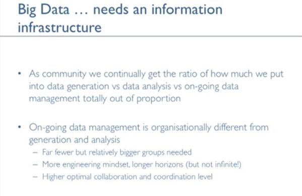

June 2014
@biolian @jcdecker71 Early days, but of potential interest for your FDA/PhUSE analysis results metadata project w3.org/2013/csvw/wiki…
Good summary by @johnmoehrke of the recent discussion on De-Identification healthcaresecprivacy.blogspot.com/2014/06/de-ide…
Updated EMA reports better suited to HTA needs pmlive.com/pharma_news/em… via @PMLiVEcom <- A case for #LinkedData #Nanopubs cc: @mavergames
Expressing (Medical Image) Measurements using OBI #ontology ncor.buffalo.edu/images/OBI_Ima… by Heiner Oberkampf, Siemens, James A Overton et al.
Lots of interesting presentations to read in more details: workshop on #imaging ontology ncorwiki.buffalo.edu/index.php/Onto… via @cekahn
Bookmarked: "Temporal disease trajectories condensed from population-wide registry data covering 6.2 million pat... ift.tt/1qBa1jU
Boken som sammanfattar Intranätverk konferensen bit.ly/1sJPOfM <- "Webben 3.0 och intranätet" med mej o @flandqvist HT @Intranatverk
@egonwillighagen I have big hopes for w3.org/2013/05/lcsv-c… @danbri @JeniT to enable this. @philarcher1 correct?
MT @SemanticWeb: Building The Scientific Knowledge Graph ift.tt/TlZzAq <- Interesting, need to understsnd in relation to #nanopub
MT @MedDRAMSSO: Outcome of the MedDRA Mgmt Board meeting meddra.org/sites/default/… <- "Future focus area: interop. w/ other terminologies"
Event to follow today: @w3c Workshop on the #webofthings Submissions from w3.org/2014/02/wot/su…? get them here: dropbox.com/sh/k6dlu6jag7g…
+1 RT @eyeforpharma: Pharma needs to Just Do It and reinvent itself social.eyeforpharma.com/column/no-more…
Wow, lots of interesting people on the @CSVConference agenda in Berlin on 15 July csvconf.com #csvconf
"The Linked Data Company" @swirrl are hiring functional programmers #clojure #opendata #linkeddata #rdf #rails swirrl.com/jobs
Who is using your data? "Each item of private data would be assigned its own URI" newsoffice.mit.edu/2014/whos-usin… #InfoAccountability #HTTPA
Produktutvecklare till NE Nationalencyklopedin @NE_se med erfarenhet av #lankadedata se.linkedin.com/jobs2/view/109…
"The role of online content in addressing the challenges of pharma" bit.ly/1wrep7H <- "The role of #opendata .." a future article?
"How Clinical Trial Data Transparency is Changing How an Entire Industry Thinks about Data" phuse.eu/Indianapolis20… via @jcdecker71 #ctdata
+10 Tracking Climate Change Information With Semantic Web Technology news.rpi.edu/content/2014/0… via @jahendler #dataprovenance
Fast typing unlock your mind medium.com/message/the-jo… by @pomeranian99 <- Thinking of my fast typing, smart colleague @PFlowergreen
Time to wind down for the Midsummer weekend sweden.se/traditions/mid… Just one more reminder: New blog post on #openFDA kerfors.blogspot.se/2014/06/openfd…
+1 RT @kdnuggets: #BigData also means Big Metadata, but it is hard to bring the #Metadata under control buff.ly/UcJGgF
#iswc2014 19-23 Oct 2014, Riva del Garda, Trento, Italy: Industry Track, submission 1-2 page abstract, 10 July iswc2014.fbk.eu/call-industry-…
Just learned about:datafairport.org Data FAIRport: Find Acces Interoperate Re-Use research data #fairdata #opendata
Good to hear about @SASsoftware's portal..At the same time the "remote desktop" makes it problematic bmj.com/content/348/bm… #DIA2014
Nice to hear GSK, Roche and Sanofi execs on data transparency and sharing videos sas.com/apps/webnet/ev…
@pdmetcalf So how about a couple of cool videos with R and Shiny / D3 examples usiing #openFDA data then?
Excelllent to see @EMA_News re-tweeting this tweet from @openFDA about downloading AE data into Excel youtu.be/N-FhPq_0N0M #openFDA
MT @openFDA: Interested in using #openFDA data in Excel? Great video tutorial youtube.com/watch?v=N-FhPq… from @OpenDataBits
Great for colleagues new to Twitter -> @JohnLauner's reflections on Twitter and its charms j.mp/19jFH4N via @medskep
Reading: CSV on the Web w3.org/2013/csvw/wiki… w great interest after a day working with #d3js CSV github.com/mbostock/d3/wi… for clinical data
In the details blog post from @1boringoldman 1boringoldman.com/index.php/2014… "analysis ready tables called the Individual Participant Data [IPD]"
+1 RT @ukodi: The Data Reformation: @JeniT on the impact that #opendata will have on our society bit.ly/1prIWS7 #opendata
Will be more World Cup, hiking and kayaking than MOOCs for me now. However, hope to able to do the #SemanticWeb MOOC openhpi.de/courses/2d1ede…
@Health2NOLA @wilbanks Hi rbr.cm/1hODVk8 looks really interesting, HT @RebarInter, Any chance this event will be webcast:ed??
Brilliant article from @digiphile about @openFDA project by @DrTaha_FDA @seanherron et al
techrepublic.com/article/openfd…
techrepublic.com/article/openfd…
"Ongoing data managent is organisationally different from generation and analysis" @ewanbirney bigdata.stanford.edu/big-data-of-ph…

@trished Just to check - is it the GSK/Roche/BI et al portal clinicalstudydatarequest.com "remote desktop" being used? #screenonly
Interesting historical blog post from @1boringoldman repeal the proprietary data act... 1boringoldman.com/?p=47029
.@Lilly_COI @MightyCasey: What an EMR Built on Twitter Would Look Like thehealthcareblog.com/blog/2014/04/2… <- What about an eCRF built on Twitter?
MT @SueMontgomeryRN: Open #APIs the keys to #HIT kingdom? bit.ly/1pbVhJU <-HT @ianmcnicoll Yes if #LinkedData websemanticsjournal.org/index.php/ps/a…
@dianthusmed @iamsarahfeeny @LillyHealth True, they could do as @DrTaha_FDA for @openFDA: use a small team of #opensource #opendata experts
@iamsarahfeeny @LillyHealth @dianthusmed Well, not much pt level in data in CSRs. So, make sum level data downloadable and not #screenonly
@LillyHealth @iamsarahfeeny hmm, "share with"?| "researchers will not be allowed to download the data" dianthus.co.uk/clinical-trial… @dianthusmed
Stanford's and Oxford's Big Data in biomedicine: all 2014 talks now online bigdata.stanford.edu/conference-201… #bigdatamed
.@RinkeHoekstra @data2semantic What is the status of Linked AERS? See this #openFDA discussion github.com/FDA/openfda/is…
"make health data more private and at the same time more easily exchanged" --@leonardkish hl7standards.com/blog/2014/06/0… #hdpalooza
.@jtleek Great #DataScience MOOC Getting and Cleaning Data csv xls json xml How about rdf sparql cran.r-project.org/web/packages/r… cc @egonwillighagen
Interesting job working with BFO, IAO ontologies -> RT @ericaxel: Semantic Web Jobs: University at Buffalo ift.tt/1i4tmnI
"impossible to combine the data with data from other sources" limitation spotted by @dianthusmed dianthus.co.uk/clinical-trial… #ctdata #alltrials
"researchers will not be allowed to download the data" limitations spotted by @dianthusmed dianthus.co.uk/clinical-trial… #ctdata #alltrials
@konklone @TwoMonthsOff Would be nice to hear @wilbanks @egonwillighagen POVs on open.fda.gov/terms/ #openFDA
Starting my #DataScience MOOC "Getting and Cleaning Data" coursera.org/course/getdata by reading #openFDA API facts open.fda.gov/api/reference/
#OpenFDA features harmonization on drug identifiers as strings open.fda.gov/api/reference/ How about URIs in next version? kerfors.blogspot.se/2014/04/openfd…
+1 MT @truve: @RecordedFuture is looking for new talent - you or someone you know? recordedfuture.com/jobs/#mlw #machinelearning #gbgftw #itjob
What’s the difference between #CDISC iSHARE and eSHARE? mungingmetadata.blogspot.com/2014/06/whats-… <- I added a couple of questions re #SemanticWeb export
@grapealope @pandeharris Re. ICD9 codes for diagnoses <- still early days, but checkout code.google.com/p/ogms/ #hdpalooza
Wow - reallly busy Twitter feed tonight :-) with e.g. #hdpalooza -> #openFDA and #WWDC14 -> #HealthKit
Bookmarked: "A Systematic Review of Re-Identification Attacks on Health Data" on CiteUlike ift.tt/1pMKvag
@VAInnovation @GetReal_Health @westr "adoption by CVS for #BlueButton" #hdpalooza <- Checkout @w3c w3.org/2013/05/lcsv-c… cc @danbri @JeniT